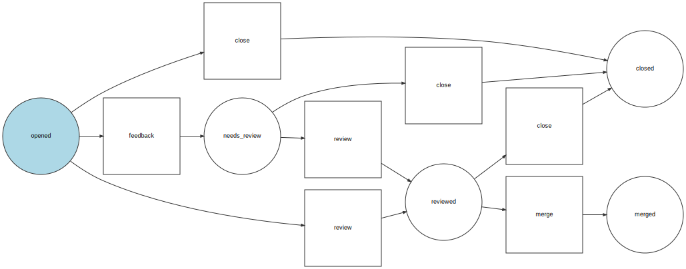

Développer votre application autour du composant Workflow
Workflow as middleware
Created by Baptiste Leduc for AFSY 2019-07
Baptiste Leduc


- 🐘 Développeur PHP ;
- AFUP ;
- 🏂 Wakeboard ;
- github.com/Korbeil
- twitter.com/Korbeil_
1. Symfony Workflow
C'est quoi ?
Le composant workflow permet de définir un cycle de vie d'un objet.
Chaque étape du processus est appelée une place.
Les actions permettant de passer d'une (ou plusieurs) places à une autre (ou des autres) places via des transitions.
Pour passer une transition, il faut que votre objet soit dans toutes les places en amont.
Votre workflow, dans un YAML
workflow:
workflows:
pull_request:
places: [opened, closed, needs_review, reviewed, merged]
transitions:
feedback:
from: opened
to: needs_review
review:
from: [opened, needs_review]
to: reviewed
merge:
from: reviewed
to: merged
close:
from: [opened, needs_review, reviewed]
to: closed
Schema
2. Workflow as Middleware
Comment utiliser ça ?
Pour compléter notre Workflow orienté middleware, il nous manque deux choses:
- Subscriber : permet de déclencher vos actions lorsqu'une transition passe
- Action(s) : permet le lien entre votre transition et vos services
Votre YAML, avec des actions
workflow:
workflows:
pull_request:
places:
# ...
metadata:
actions:
- 'Workflow\Action\Doctrine\Flush'
transitions:
merge:
from: reviewed
to: merged
metadata:
actions:
- 'Workflow\Action\PullRequest\Merge'
# ...
Subscriber
public function handleTransition(TransitionEvent $event)
{
$subject = $event->getSubject();
$transition = $event->getTransition();
$store = $event->getWorkflow()->getMetadataStore();
$actions = array_merge(
$store->getMetadata('actions', $transition) ?? [],
$store->getMetadata('actions') ?? []
);
// Validation ~ Slide suivante 😉
foreach ($actions as $action) {
$actionObject = $this->actions[$action];
$actionObject->transition($subject, $transition->getName());
}
}
Subscriber
Validation
$data = $event->getContext()['data'];
if ($data instanceof TransitionDataInterface) {
$violations = $this->validator->validate($data, null, $transition->getName());
if ($violations instanceof ConstraintViolationList && $violations->count() > 0) {
throw new ValidationException($violations);
}
}
Subscriber
Configuration
Workflow\Subscriber\WorkflowSubscriber:
arguments:
- !tagged workflow.action
- '@Symfony\Component\Validator\Validator\ValidatorInterface'
public function __construct(iterable $actions, ValidatorInterface $validator)
{
$array = [];
foreach ($actions as $action) {
$array[\get_class($action)] = $action;
}
$this->actions = $array;
$this->validator = $validator;
}
Action
Interface
interface ActionTransitionInterface
{
public function transition(Entity $entity, string $transitionName);
}
Configuration
_instanceof:
Workflow\Action\ActionTransitionInterface:
tags: ['workflow.action']
Action
Implémentation
class Merge implements ActionTransitionInterface
{
public function transition(Entity $entity, string $transitionName)
{
// ma logique ici 👋
}
}
class Flush implements ActionTransitionInterface
{
public function transition(Entity $entity, string $transitionName)
{
$this->entityManager->persist($entity);
$this->entityManager->flush();
}
}
3. Aller plus loin...
Toujours plus !
Endpoint API
Votre ressource API Platform
resources:
Entity\PullRequest:
itemOperations:
get: ~
transition:
method: 'PUT'
path: '/workflow/pull-request/{id}/{transition}'
controller: 'Controller\PullRequestTransition'
defaults:
_api_receive: false
Endpoint API
Votre controller
public function applyTransition(Entity $entity, string $transitionName, Request $request, string $dataClass = null): WorkflowStoreInterface
{
$workflow = $this->workflows->get($entity);
if (!$workflow->can($entity, $transition)) {
throw new BadRequestHttpException('transition_failed');
}
if (null !== $dataClass) {
$transitionData = $this->serializer->deserialize($request->getContent() ?: '{}', $dataClass, 'json');
$workflow->apply($entity, ['data' => $transitionData]);
} else {
$workflow->apply($entity);
}
return $entity;
}
Endpoint API
Votre vrai controller
class PullRequestTransition extends WorkflowController
{
public function __invoke(Request $request, PullRequest $pullRequest, string $transition)
{
return $this->applyTransition(
$pullRequest,
$transition,
$request,
PullRequestTransitionData::class
);
}
}
Audit trail
private function transitionHistory(Event $event)
{
$subject = $event->getSubject();
$entry = new TransitionEntry();
$entry->setWorkflow($event->getWorkflow()->getName());
$entry->setSubject($workflowSubject);
$entry->setClass(\get_class($workflowSubject));
$entry->setReference($workflowSubject->getId() ?? 0);
$entry->setTransition($event->getTransition()->getName());
$entry->setAdmin('system');
$entry->setDate(new \DateTime());
$entry->setPreviousMarking($this->rebuildPreviousMarking($event));
$entry->setNextMarking($workflowSubject->getMarking());
$this->entityManager->persist($entry);
}
4. Conclusion
workflow:
workflows:
order:
metadata:
actions:
- 'Workflow\Action\Doctrine\Flush'
transitions:
pay:
from: [with_billing, with_shipping, with_user]
to: paid
metadata:
actions:
- 'Workflow\Action\Order\DoPayment'
- 'Workflow\Action\Order\IsPreorder'
- 'Workflow\Action\Order\IsFirstOrder'
- 'Workflow\Action\Order\Invoice\Create'
- 'Workflow\Action\Order\Invoice\Pdf'
- 'Workflow\Action\Order\SendValidationEmail'